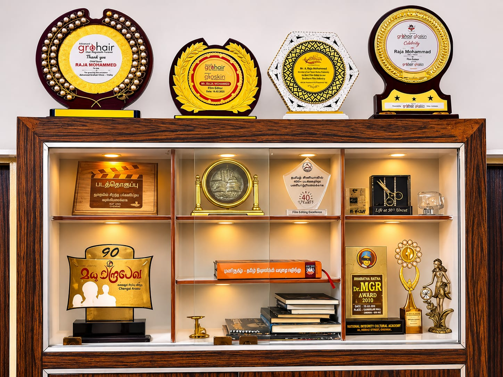
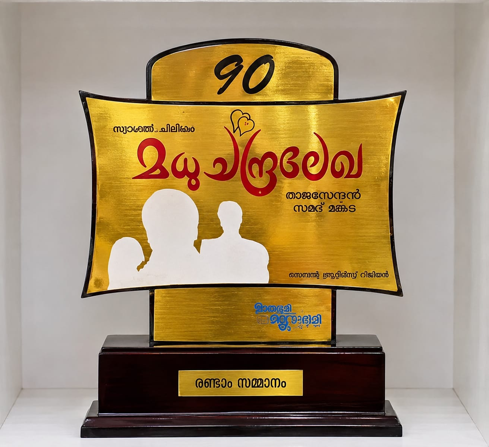
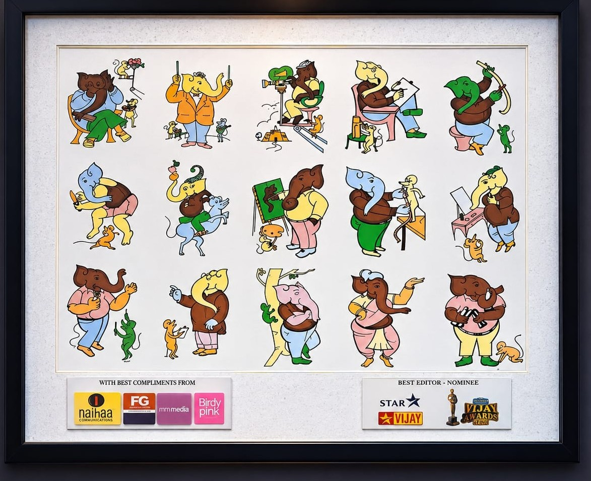
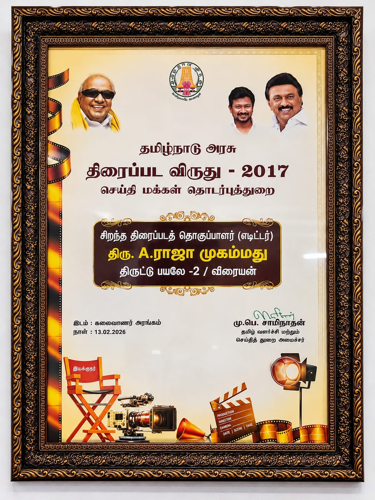
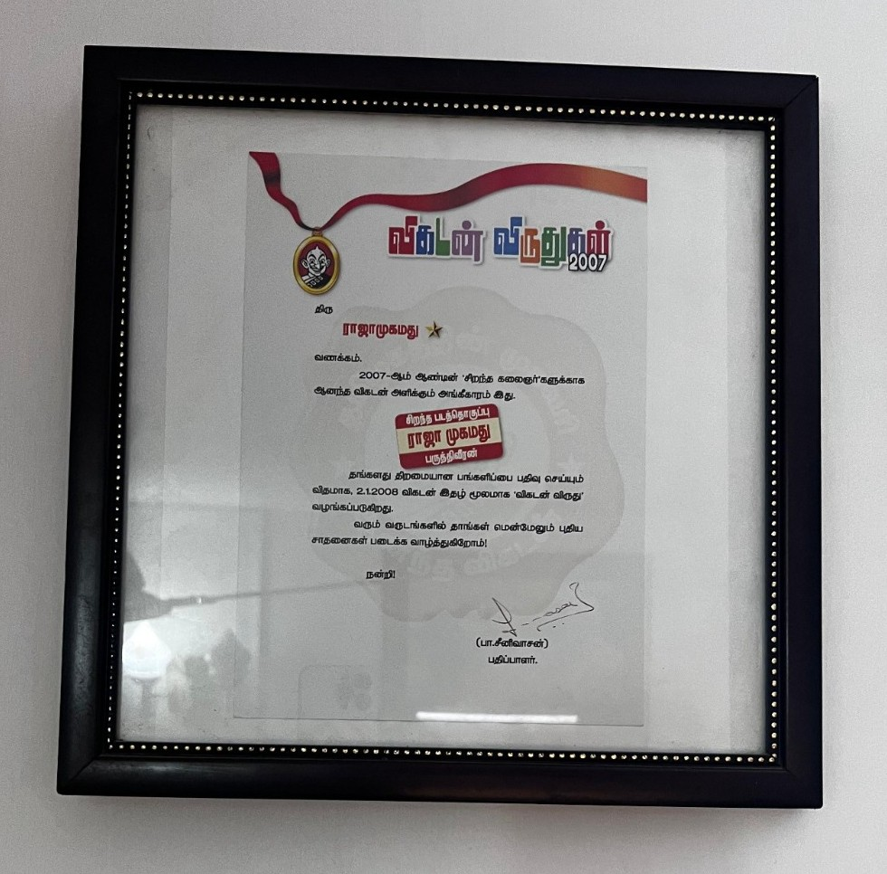
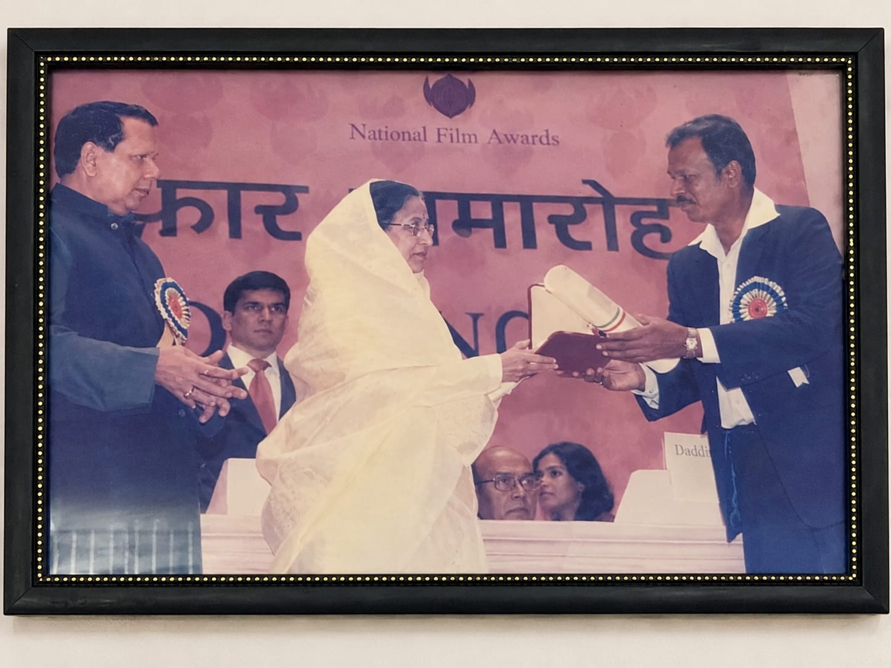
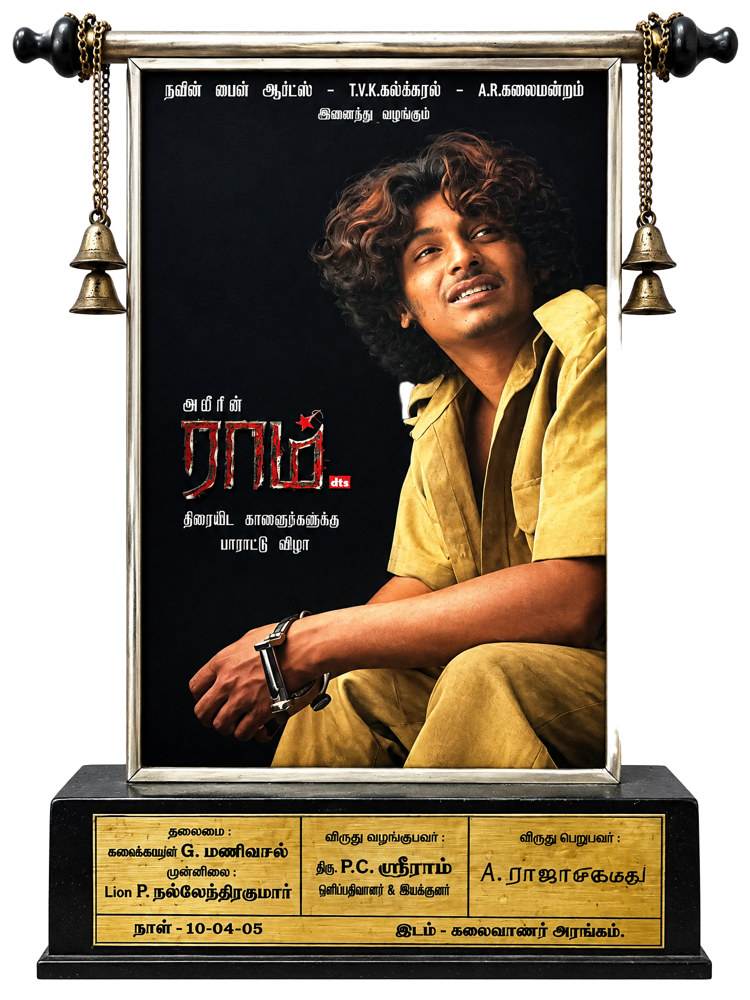
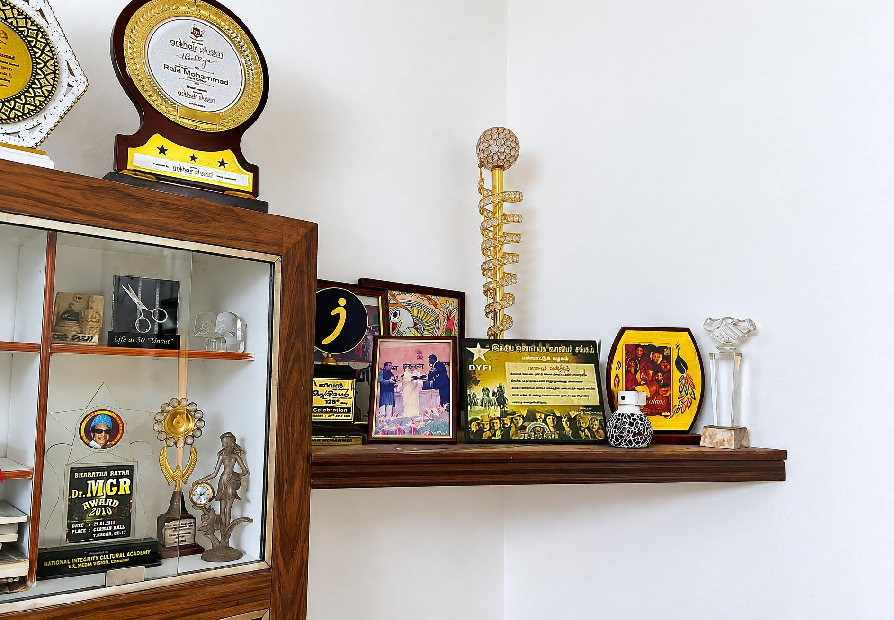
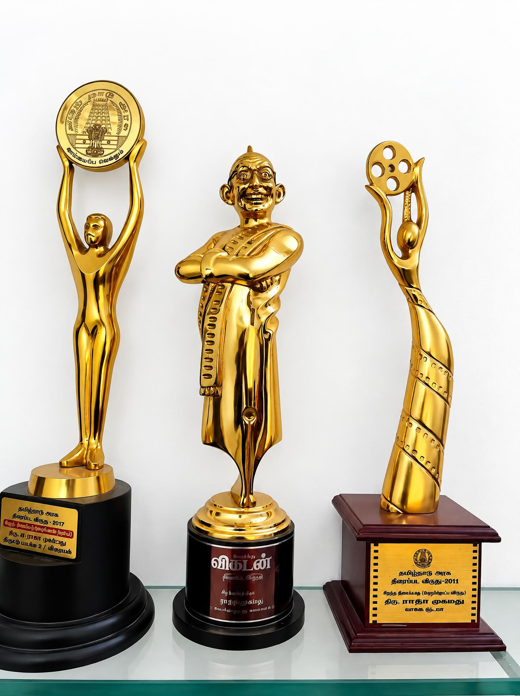
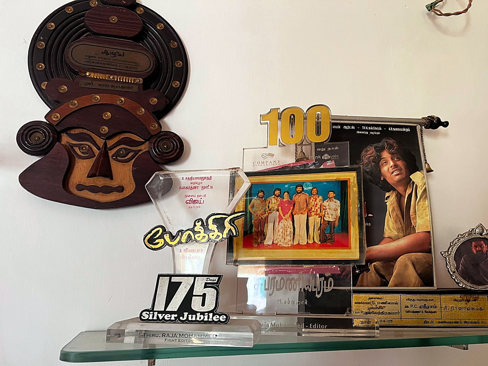

Indian Film Editor · 2003 — Present
Every frame has a purpose. Every cut carries an emotion. Explore the cinematic journey of film editor Raja Mohammed, whose work moves across Tamil, Malayalam and Telugu cinema.
Raja Mohammed is an Indian film editor associated with Tamil, Malayalam and Telugu cinema. His career spans multiple film industries, bringing stories together through rhythm, pacing and visual continuity.
His first Tamil venture was Nala Damayanthi (2003). His editing work on Paruthiveeran (2007) earned him the National Film Award for Best Editing. He later received the Vijay Award for Best Editor for Subramaniapuram (2008).
Recognition for the craft of shaping performances, scenes and stories into memorable cinema.
Paruthiveeran — Silver Lotus (Rajat Kamal) recognition.
Subramaniapuram (2008).



Explore the filmography cross-checked against independent film databases (Venpura, Moviebuff, TamilMDb and BookMyShow), arranged as a cinematic poster gallery by film industry. Select any title to open Google results for its release year, director, cast and movie information.
A visual interpretation of the post-production process — designed as a tribute to the precision and creativity behind every finished frame.
Finding the emotional core and shaping the narrative flow.
Building scenes through timing, rhythm, continuity and pace.
Working with sound, music and visual tone to support the story.
Refining the sequence into a cohesive cinematic experience.
Add approved portraits, behind-the-scenes moments, editing-room photographs and production stills. Click any frame to upload an image locally.







Professional enquiries and collaborations.